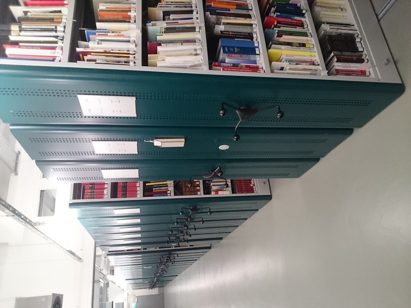
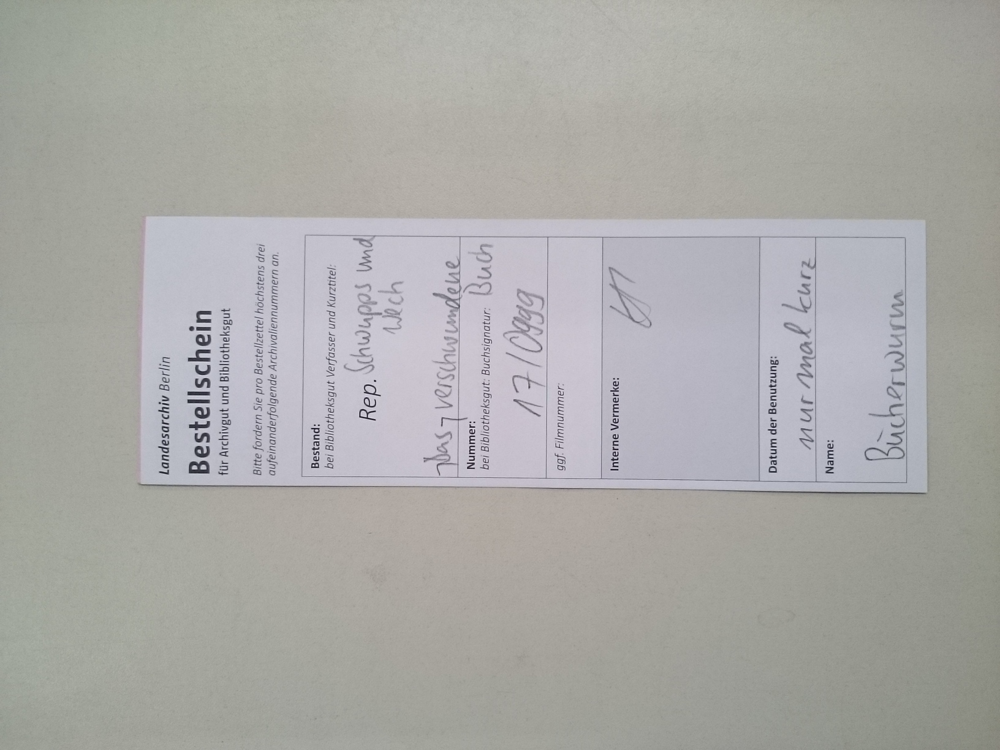
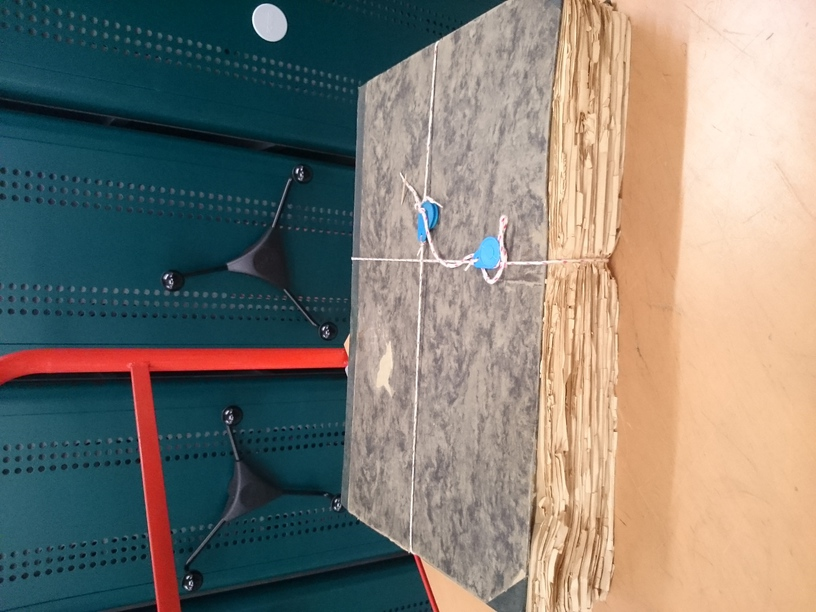
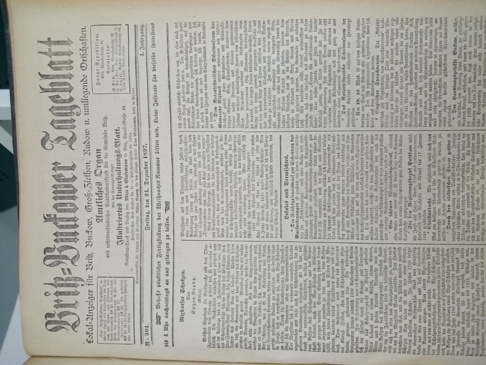

Das Bild zeigt einige Regale im neuen Bibliotheksmagazin. Hier befindet sich seit Beginn dieses Jahres fast der gesamte Bestand an Büchern, Zeitschriften- und Zeitungsbänden. Die Zeitungen werden zur Zeit umsystematisiert und signiert. Um aufwendige Transporte zu vermeiden, wird diese Medienbearbeitung direkt im Magazin durchgeführt.

Das Landesarchiv Berlin verwendet ein analoges Bestellverfahren für die Aktenbestände. Dieses Verfahren wird auch für den Bibliotheksbestand angewandt. Fehlt sowohl das Buch als auch der Platzhalter im Magazin, ist es oft sehr aufwendig das gesuchte Exemplar wiederzufinden.
Die Zeitungstitel waren im Katalog ausschließlich mit der Nummer des Regals, in dem die Bände standen, eingetragen. Also Berliner Zeitung Regal 5
. Das führte dazu, dass mehrere Titel die selbe Signatur
hatten oder auch Titel mit umfangreichem Bestand gleich mehrere Signaturen
, Berliner Morgenpost Regal 9, 10 und 27
. Dadurch musste oft unnötig lang nach einzelnen Bänden gesucht werden.

Zeitungen sind nun einmal nicht für eine dauerhafte Aufbewahrung gemacht. Besonders geschädigt sind meist seltene Titel oder die Ausgaben von historisch bedeutsamen Daten, wie dem 9. November 1918. Aber auch Kriegsschäden
sind hier zu finden.

In dem Zeitungsbestand befinden sich einige Berliner Lokalblätter, die in der Zeitschriftendatenbank (ZDB) nicht nachgewiesen sind. Die Chancen stehen also ganz gut, dass unsere Exemplare die einzigen noch existenten sind. Wieviel historischen oder wissenschaftlichen Gehalt so ein Anzeigenblättchen von 1897 hat, ist aber wohl eine andere Frage.
Die Bibliothek des Landesarchivs Berlin ist eine wissenschaftliche Spezialbibliothek mit den Schwerpunkten Berliner Landes- und Verwaltungsgeschichte, Berliner Persönlichkeiten und archivwissenschaftliche Literatur. Sie dient der Versorgung von Mitarbeiterinnen und Mitarbeitern sowie von Nutzerinnen und Nutzern des Archivs mit Fachinformationen und Medien. Sie soll diese bei der Erschließung von Aktenbeständen und der Gewinnung neuer Erkenntnisse unterstützen.
Maximilian Hallmann ist Fachangestellter für Medien- und Informationsdienste. Er betreut die Bibliothek seit November 2014, zunächst allein, seit Juli 2017 zusammen mit einer weiteren FaMI.